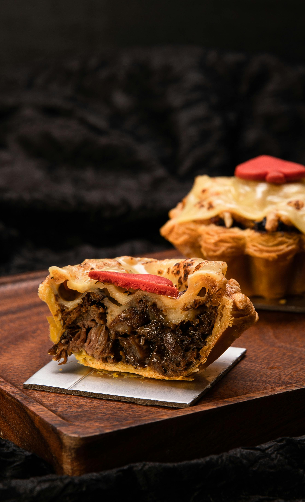

Hearty Shepherd's Pie

DESCRIPTION
Shepherd’s Pie is the quintessential one-pan meal, offering a structural beauty similar to lasagna but with a rustic, earthy profile. It features a base of savory minced meat and vegetables topped with a thick, piped layer of buttery mashed potatoes.
Success with this recipe depends on the "crust" of the potatoes. By roughing up the top with a fork before baking, you create peaks that turn crispy and dark brown in the oven, providing a necessary crunch against the smooth, gravy-soaked filling underneath.
INGREDIENTS
- 1.5 lbs Ground lamb or beef
- 2 lbs Russet potatoes, peeled and cubed
- 1 cup Frozen peas and carrots
- 1 cup Beef broth
- 2 tbsp Tomato paste
- 1/2 cup Whole milk or heavy cream
- 4 tbsp Unsalted butter
- 1 medium Onion, chopped
- 1 tbsp Worcestershire sauce
- 1 tsp Dried thyme
- 1/2 cup Shredded white cheddar cheese (optional)
STEPS TO COMPLETE THE DISH
- Boil the potatoes in salted water until soft, then mash with butter and milk until smooth.
- Brown the meat with onions in a large oven-safe skillet, draining any excess fat.
- Stir in the tomato paste, thyme, Worcestershire sauce, and beef broth; simmer until thickened.
- Fold in the peas and carrots and spread the mixture evenly across the skillet.
- Spread the mashed potatoes over the meat, using a fork to create decorative ridges.
- Sprinkle with cheddar cheese if desired for extra richness.
- Bake at 400°F for 20 to 25 minutes until the potato peaks are browned.
Home